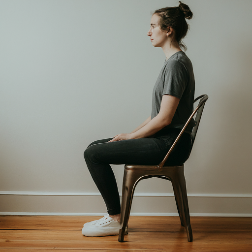
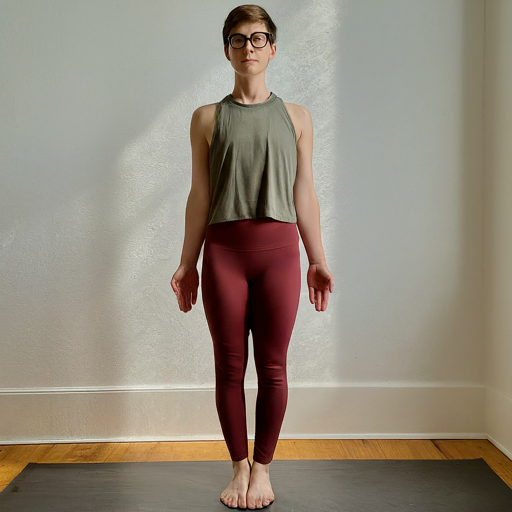

Benefits of Good Sitting Posture
- Improved spinal health
- Reduced muscle and joint strain
- Enhanced breathing and circulation
- Boosted productivity and concentration
Good sitting posture is crucial for overall health and well-being.
Sitting Mode
Place the camera as shown in the image above.
Click the button below to analyze and correct your sitting posture in real-time.
Importance of Correct Posture in Exercise
Correct posture during exercise helps:
- Reduce risk of injury
- Improve exercise effectiveness
- Target the intended muscles
- Ensure proper alignment and balance
Exercise Mode
Place the camera as shown in the image above.
Click the button below to be guided through exercises for better posture.